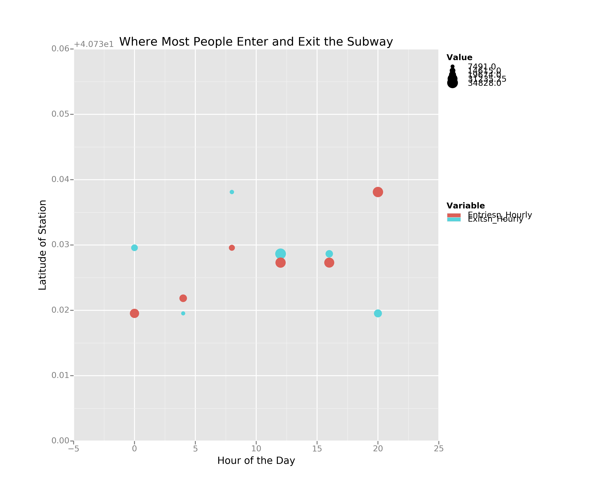
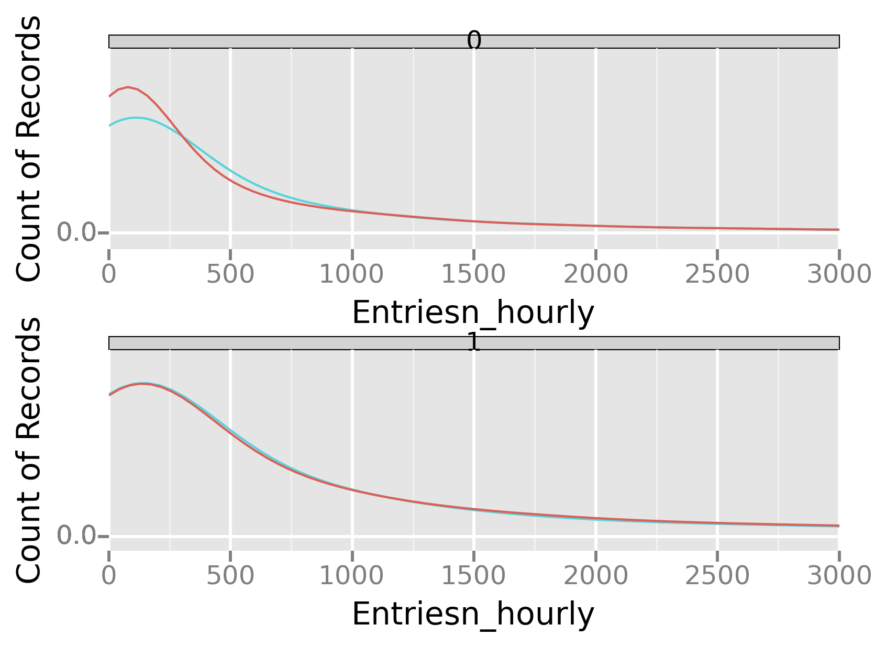
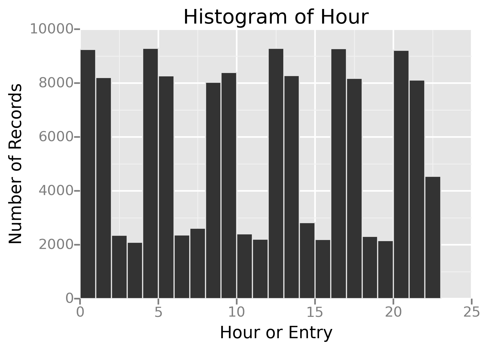
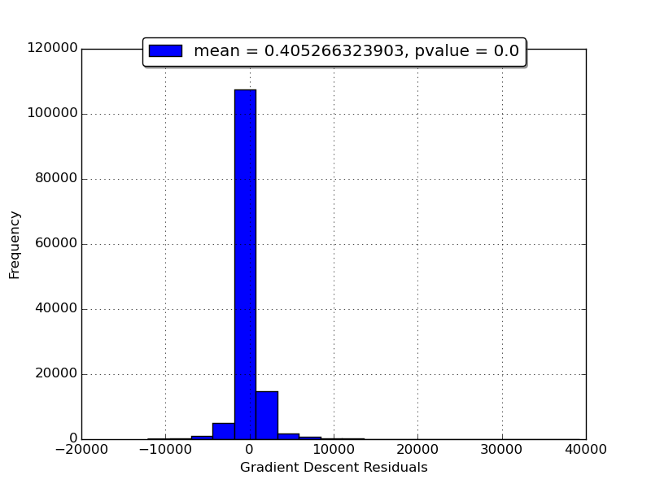

.
Short Questions to Analyzing the NYC Subway Dataset
Overview
This project consists of two parts. In Part 1 of the project, you
should have completed the questions in Problem Sets 2, 3, 4, and 5 in
the Introduction to Data Science course.
This document addresses part 2 of the project. Please use this
document as a template and answer the following questions to explain
your reasoning and conclusion behind your work in the problem
sets. You will attach a document with your answers to these questions
as part of your final project submission.
Code used to produce the plots and models in this report are included
in the attached file "subway.py".
Statistical Test
Which statistical test did you use to analyze the NYC subway data?
I used the Mann-Whitney U test.
Did you use a one-tail or a two-tail P value?
I used a two-tail p-value. Even though the Mann
Whitney U test gives a one-tail p-value, I computed a two-tail
p-value from the one-tail value.
What is the null hypothesis?
The NULL hypothesis states that with two samples
of entry data, one for rainy and one for non-rainy days, if we
draw randomly from each same set, it equally likely that one is
greater than the other.
What is your p-critical value?
I used a p-critical value of 5%
Why is this statistical test applicable to the dataset? In particular,
consider the assumptions that the test is making about the
distribution of ridership in the two samples.
The histograms of hourly ridership on rainy and
non-rainy days show that the data is not normally distributed. So
t-test is not appropriate on such data, and we used a
non-parametric test such as Mann Whitney U test.
What results did you get from this statistical test? These should
include the following numerical values: p-values, as well as the means
for each of the two samples under test.
The statistical test results are: rainy day mean = 1105.4464, non-rainy day
mean = 1090.2788, and one-sided p-value = 0.02499
What is the significance and interpretation of these results?
The Mann-Whitney U test produces a one-tail
p-value of 0.02499. Although the observed mean ridership on rainy
days is larger than that on non-rainy days, we use a two-tailed
test to account for the cases where ridership on rainy days can
either be higher or lower than that on non-rainy days. The
one-tail p-value can be doubled to get a two-tail p-value of 4.99%
[12]. This implies a 4.99% chance of seeing a U value as extreme as
in our test, if the subway ridership was the same on rainy and
non-rainy days. In other words, for a p-critical value of 5%,
there is a statistically significant difference between the hourly
number of riders on rainy and non-rainy days.
Linear Regression
What approach did you use to compute the coefficients theta and
produce prediction for ENTRIESn_hourly in your regression model:
- Gradient descent (as implemented in exercise 3.5)
- OLS using Statsmodels
- Or something different?
Models are created using both Gradient descent and Ordinary Least
Squares using statsmodesl [7, 8]. Although R2 values obtained from
both models are similar, the residual mean from the OLS
predictions is 0.01 which closer to 0 than the residual mean of
0.69 from gradient descent predictions.
What features (input variables) did you use in your model? Did you use any dummy variables as part of your features?
We started with a small set of features and then gradually
expanded the set to improve the performance of the model. We
started with a minimal set of feature variables, hour (int64),
rain (0-1), fog (0-1), and a variable for turnstile unit. Later we
added another 0-1 variable called 'weekday' that indicates whether
it is a working day or a weekend. We used the following code to
determine this variable
turnstile_weather['day_week'] = turnstile_weather['datetime'].
map(lambda x: pandas.to_datetime(x, dayfirst=True).weekday())
turnstile_weather['weekday'] =
turnstile_weather['day_week'].map(lambda x: 1 if x < 5 else 0)
Since the tunstile unit is described by non-numerical values, we
had to convert them into 466 different 0-1 dummy variables before
using them in a regresssion model using the following code
dummy_units = pandas.get_dummies(df['UNIT'], prefix='unit')
features = features.join(dummy_units)
Why did you select these features in your model? We are looking for
specific rea sons that lead you to believe that the selected features
will contribute to the predictive power of your model.
-
Your reasons might be based on intuition. For example, response for
fog might be: “I decided to use fog because I thought that when it is
very foggy outside people might decide to use the subway more often.”
- Your reasons might also be based on data exploration and
experimentation, for example: “I used feature X because as soon as I
included it in my model, it drastically improved my R2 value.”
The feature variables used in the regression are explained below
- For predicting hourly entries, hour should be
a feature variable.
- The Mann-Whitney U test indicates rain increases average
ridership, so rain is used as a feature variable.
- Common sense tells us ridership is impacted by fog, hence
fog was included.
- Similarly, we believe a causal connection exists between
ridership and 'weekday'.
-
The dummy variables help us distinguish between low-volume and
high-volume stations. Without them, each station is treated
exactly the same. The dummy variables provide a different baseline
(intercept) for each station, upon which the other features act as
modifiers.
What are the coefficients (or weights) of the non-dummy features in
your linear regression model?
The coefficients of the non-dummy features obtained from both the
original and the improved data sets are given in the follwoing table
| Variable |
Coefficient from Original Dataset |
Coefficient from Improved Dataset |
| hour |
4.63609894e+02 |
8.58068182e+02 |
| rain |
-3.72191463e+01 |
2.43552116e+01 |
| fog
| 1.81279042e+01 |
-5.87978269e+01 |
| weekday |
2.44304279e+02 |
4.39333366e+02 |
What is your model’s R2 (coefficients of determination) value?
When trained and tested on the original data, the Gradient descent
model has an R2 value of 0.468331243229 and the OLS model has an R2
value of 0.46830639288.
When trained and tested on the improved data, the Gradient descent
model has an R2 value of 0.481783237507 and the OLS model has an
R2 value of 0.481782387414.
| Regression Method |
R2 on Original Dataset |
R2 on Improved Dataset |
| Gradient Descent |
0.468331243229 |
0.46830639288 |
| OLS |
0.481783237507 |
0.481782387414 |
What does this R2 value mean for the goodness of fit for your
regression model? Do you think this linear model to predict ridership
is appropriate for this dataset, given this R2 value?
The R2 value, alternatively called the coefficient of determination,
measures the models ability to account for the variability in the data
relative to a intercept-only model which merely predicts the mean. It
varies from 0 to 1 and bigger is better. Baseline model has an R2 of 0,
and the perfect model has an R2 of 1.
The R2 value of our model is 0.493. In other words, it is able to
identify 49% of the variation in the training data. Although we cannot
evaluate a model only based on its R2 value, the R2 value of 49%
is a quite reasonable rule-of-thumb guidance. That said, R2 values of
time-series data can be tricky, and even a bad model can sometimgs
have a 90% R2 value [11].
Visualization
Please include two visualizations that show the relationships between
two or more variables in the NYC subway data. You should feel free to
implement something that we discussed in class (e.g., scatter plots,
line plots, or histograms) or attempt to implement something more
advanced if you'd like.
Remember to add appropriate titles and axes labels to your
plots. Also please add a short description below each figure
commenting on the key insights depicted in the figure.
One visualization should contain two histograms: one of
ENTRIESn_hourly for rainy days and one of ENTRIESn_hourly for
non-rainy days.
-
You can combine the two histograms in a single plot or you can use two
separate plots.
-
If you decide to use to two separate plots for the two histograms,
please ensure that the x-axis limits for both of the plots are
identical. It is much easier to compare the two in that case.
-
For the histograms, you should have intervals representing the volume
of ridership (value of ENTRIESn_hourly) on the x-axis and the
frequency of occurrence on the y-axis. For example, each interval
(along the x-axis), the height of the bar for this interval will
represent the number of records (rows in our data) that have
ENTRIESn_hourly that falls in this interval.
-
Remember to increase the number of bins in the histogram (by having
larger number of bars). The default bin width is not sufficient to
capture the variability in the two samples.
 >
>
The x-axis has been truncated at 6000 to leave out outliers in the
long tail. There are a lot more samples with no rain than rain. We
suspect that more people enter and ride subways on rainy days. To test
this hypothesis, we need to perform a statistical significance
test. Since the sample data is not normally distributed, we could not
use Welch’s T test. Instead, we used the Mann-Whitney U test.
One visualization can be more freeform. Some suggestions are:
- Ridership by time-of-day or day-of-week
- Which stations have more exits or entries at different times of day

The plot is missing legends due to a bug in the latest python
ggplot. This plot shows the stations where the maximum number of
entries and exists occur over the hours of the day. The y-axis
shows the latitude of the stations (this gives a positional feel
to the points), and the x-asis shows the hour of the day. Color is
used to distinguish entries from exits: the red points
represent stations with most entries, and the blue points
represent stations with most exits. The size of the points are
scaled according to the number of riders, so that we can compare
how the maximum number of entries and exists vary throughout the day.
Conclusion
From your analysis and interpretation of the data, do more people ride
the NYC subway when it is raining or when it is not raining?
Our analyses of the May 2011 data show that more people ride the subway when it is raining.
Please address the following questions in detail. Your answers should
be 1-2 paragraphs long.
What analyses lead you to this conclusion? You should use results from
both your statistical tests and your linear regression to support your
analysis.
Our exploratory data analyses indicated that more people might ride the
subway on rainy days. When we compare the density plots or hourly
entries on rainy and non-rainy days both on weekends and weekdays, we
see that the weekday density plot of rainy days (color blue) have
wider right tail.

The above plot was created with the following code. Note that the legends
do not work in the current version of ggplot.
plot = ggplot(turnstile_weather, aes(x='ENTRIESn_hourly', color='rain')) + \
geom_density() + \
xlim(0, 3000) +\
facet_wrap('weekday') +\
labs(x='Entriesn_hourly', y='Count of Records')
According to the sample data set, average ridership on the NYC
subway increases from 1090 entries per hour on non-rainy days to
1105 entries per hour on rainy days. As mentioned above, we
we validated this observation with a statistical test. The
Mann-Whitney U test produces a one-tail p-value of 0.02499, which
leads to a two-tail p-value of 4.99%. In other words, for a p-critical
value of 5%, there is a statistically significant increase in the
hourly number of riders on rainy days compared to non-rainy days.
Next step is to predict the number of hourly entries linear
regression models. Unfortunately the Gradient Descent model
produced a negative co-efficient for the 'rain' variable which
seems to imply that fewer people ride the subway when it is
rainig. This is the opposite of what we expected. We suspect that
the calculation of hourly entries in the original dataset is not
reliable (more on this in the 'Reflection' section). The improved
data set, on the other hand, counts the hourly entries in a more
consistent manner. When the regression model is trained on the
improved data, it produces a positive coefficient for the 'rain'
variable.
Reflection
Please address the following questions in detail. Your answers should
be 1-2 paragraphs long.
Please discuss potential shortcomings of the methods of your analysis,
including:
- Dataset
We have used statistical techinques to analyse data and build
regression models. For these techniques to work, the dataset
needs to represent a random sample of the population. In this
section we will examine how "random" the sample really is.
The originial MTA data set contains time-series records of
cumulative number of entries and exits at each turnstile. From
this data we calculated hourly entries and exits by taking the
difference between the successive records. This is valid only
if the time series data is colleced at fixed intervals in a
periodic fashion. Unfortunately this is not the case, unit R003 only
logs data every 4 hours starting from midnight. Another unit,
R550, logs data many times every hour.
unitName = 'R003'
date = '2011-05-01'
hours = df[(df.UNIT==unitName) & (df.DATEn==date)].TIMEn
print "Unit ", unitName, " has logged entries on ", date, " at hours:"
print hours.values
The following histogram clearly shows how the total number of
records vary from hour to hour. Due to this uneven number of
records per hour, our calculation of entries per hour is not
acccurate, and may lead to unreliable conclusions and predictions.
rph_plot = ggplot(aes(x='hour'), data=df) +\
geom_histogram() +\
ggtitle('Histogram of Hour') + \
xlab('Hour or Entry') + ylab('Number of Records')

This problem has been addressed in the improved data set [2].
Indeed, it contains an even number of records for every 4-hour
period.

- Linear regression model
Although the MTA data records entry and exit data for each
station several times a day, the weather data is recorded once
a day. Thus on a given day, we expect the hourly variations in
ridership independent of whether it is rainy or not.
Since the Mann-Whitney test confirmend our expectation that
more people ride the subway on rainy days, we expect the theta
coefficient of the 'rain' varaible to be positive in the
regression model. Although, this coefficient is negative in
the model creative in the model trained on the original data,
it is positive in the improved data. This confirms that the
data should be adequately cleaned up before using to to build
predictive models.
A careful examination of the residuals can tell us
if our choice of the regression model is appropriate. Residuals are
a form of error, and basically we expect the errors to be normally
and independently distributed with a mean of 0 and some constant
variance [5]. Here is a histogram of the residuals.

# Test residuals for normal distribution
residuals = outcomes - predictions
(zscore, pvalue) = scipy.stats.normaltest(residuals)
legLabel = 'mean = {0}, pvalue = {1}'.format(residuals.mean(), pvalue)
# Plot a histogram of residuals
plt.figure()
residuals.hist(bins=20, label=legLabel)
plt.xlabel(prefix+" Residuals")
plt.ylabel("Frequency")
plt.legend(loc='upper center', bbox_to_anchor=(0.5, 1.05),
fancybox=True, shadow=True)
Although the histogram looks a good fit for
Gaussian distribution (symmetrical with peak in the middle),
the normality test produces a p-value of 0.0. In other words,
the residuals deviate from a normal distribution in a
statistically significant manner [6]. This failure in the
normality test needs further investigation: we may either
examine if this caused by a few outliers, or swtich to
non-parametric tests.
We could have worked a bit more to improve the
performance of the model by a combination of the following two
approaches.
- Make the model more complex by either adding more features
or by using polynomial combinations of features. However, a complex model
takes longer to train and to use.
- Make the data more complex and train the model with a larger data
set. However, processing a large data set often requires a distributed
processing framework such as MapReduce.
Note that these two approaches are complimentary. If
the model is too simple, it underfits the data (high bias) and its
performance cannot be improved by feeding more data. If the model is
too complex, it overfits the data (high variance), and its
performance can be improved by tuning it with more data.
- Statistical test
The conclusions drawn based on Mann-Whitney U test results can
be made stronger with additional descriptive statistics such
as interquartile range [13].
(optional)
Do you have any other insight about the dataset that you would like to
share with us?
This project inspects the effect of rain on hourly subway
ridership based on daily weather data. Since weather data is daily and
not hourly, it is reasonable to expect that we can create a more
accurate model to predict daily ridership as opposed to hourly
ridership. To verify this, we aggregated the hourly entries of each
unit on each day, and then built a model to predict the daily
ridership. Indeed a Gradient Descent based regression model produced a
R2 value of 0.889.
References
[1] Combined MTA and underground weather data.
[2] Improved MTA data
[3] sipy.stats.mannwhitneyu
[4] One-tail vs. two-tail P values, GraphPad Software
[5] Are the model residuals well behaved?, NIST Engineering Statistics Handbook
[6] Interpreting
results: Normality tests, GraphPad Software
[7] Ordinary
least squares, Wikipedia
[8] Statsmodels regression OLS
[9] Linear least squares (mathematics), Wikipedia
[10] Polynomial regression, Wikipedia
[11] What's
a good value for R-squared ?
[12] What are the differences between one-tailed and two-tailed tests ?
[13] Understanding the Mann-Whitney U Test